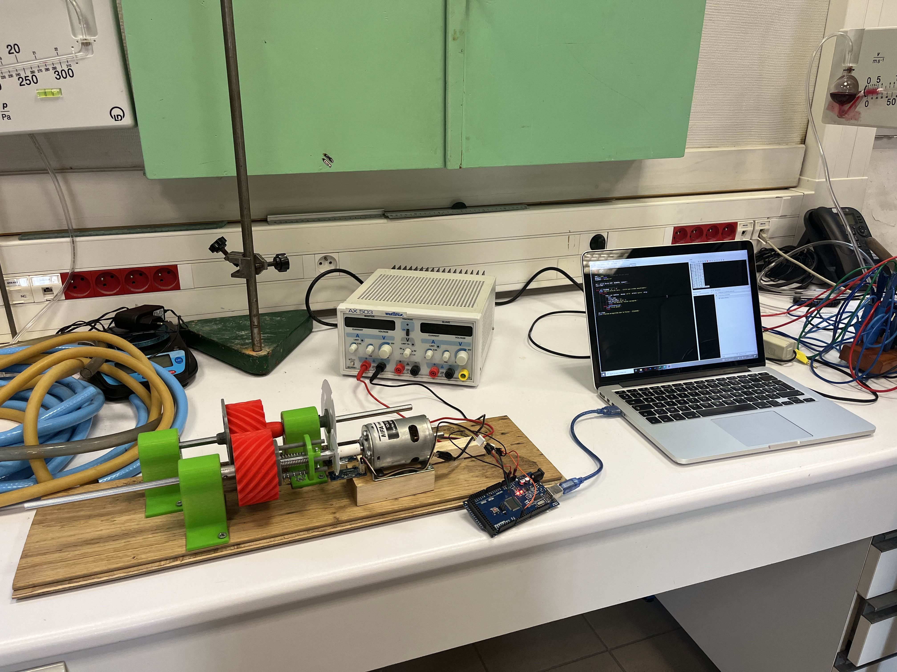
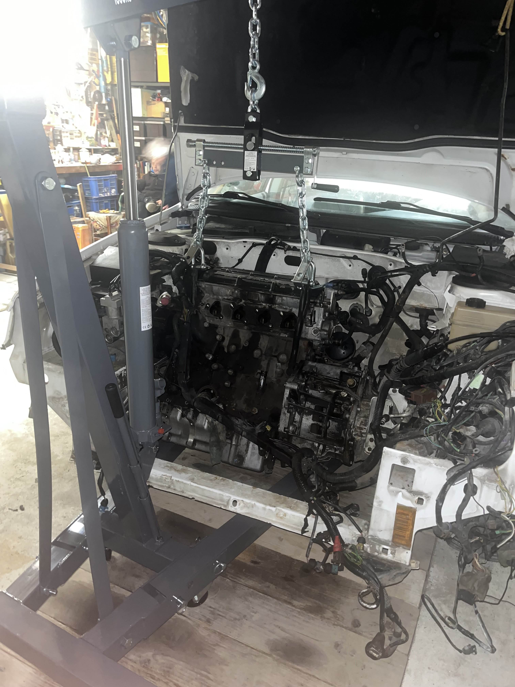

I am currently enrolled in the Fluid Mechanics, Energy and Environment department at ENSEEIHT. In my second year, I will have to choose between two main specializations: Environment, which focuses on hydrodynamics and environmental challenges, and Energy, which is oriented toward aerodynamics and energy systems.
At the moment, I am leaning toward the Energy track, as it aligns more closely with my interests in aeronautics, automotive engineering, and space technologies.
During the final year, I will have the opportunity to specialize even further among a wide range of advanced topics, depending on the path I choose.
Here you will find an overview of the academic courses I have taken during my studies at ENSEEIHT, as well as the main scientific and technical concepts I have learned throughout my engineering training.
•
Introduction to the fundamentals of fluid mechanics and their applications.
•
Study of deformable solids as a foundation for more advanced solid mechanics.
•
Beginning of a new second language: Russian.
•
Career and Management courses, helping me better understand the professional world and its expectations.
•
Strengthening my knowledge in classical thermodynamics.
•
Further development of mathematical tools through probability and integration.
During my studies, I have developed a wide range of theoretical and practical skills. You can find some of them below.
•
Fluid Mechanics
•
Aerodynamics
•
Aerodynamics
•
Thermodynamics
•
Mathematics
•
Solid Mechanics
•
CAD (SolidWorks, Flow Simulation)
•
Programming (Python, Fortran, HTML/CSS, C++)
•
Adobe Creative Suite (Photoshop, Illustrator, Premiere Pro, Lightroom Classic, etc.)
•
Microsoft Office Suite
•
Curiosity
•
Creativity
•
Communication
•
Problem Solving
•
Teamwork
•
Sportmanship
•
Sport
•
languages
Here are some of the academic and personal projects I have completed during my studies, illustrating the practical application of my engineering knowledge.
As part of my second-year CPGE project, I studied the behavior of synchronizers in manual gearboxes, focusing on friction-based torque transmission. The goal was to model and understand how contact materials, applied forces, and surface conditions influence energy dissipation and synchronization time. This project allowed me to combine mechanical modeling, experimental analysis, and physical reasoning around friction and rotational dynamics.
Together with my father and brother, I entirely rebuilt the engine of our family car. This project required precision, patience, and strong technical curiosity. From disassembly and diagnostics to reassembly and testing, every step demanded attention to detail and problem-solving skills. Beyond the mechanical aspects, it was also a valuable teamwork experience, reinforcing my ability to collaborate, stay organized, and persevere through complex technical challenges.
